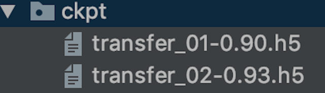

3.1 迁移学习案例
学习目标
- 目标
- 说明数据增强的作用
- 应用
- 应用Keras基于VGG对五种图片类别识别的迁移学习
3.1.1 案例：基于VGG对五种图片类别识别的迁移学习
3.1.1.1 案例效果

Epoch 1/2
1/13 [=>............................] - ETA: 3:20 - loss: 1.6811 - acc: 0.1562
2/13 [===>..........................] - ETA: 3:01 - loss: 1.5769 - acc: 0.2500
3/13 [=====>........................] - ETA: 2:44 - loss: 1.4728 - acc: 0.3958
4/13 [========>.....................] - ETA: 2:27 - loss: 1.3843 - acc: 0.4531
5/13 [==========>...................] - ETA: 2:14 - loss: 1.3045 - acc: 0.4938
6/13 [============>.................] - ETA: 1:58 - loss: 1.2557 - acc: 0.5156
7/13 [===============>..............] - ETA: 1:33 - loss: 1.1790 - acc: 0.5759
8/13 [=================>............] - ETA: 1:18 - loss: 1.1153 - acc: 0.6211
9/13 [===================>..........] - ETA: 1:02 - loss: 1.0567 - acc: 0.6562
10/13 [======================>.......] - ETA: 46s - loss: 1.0043 - acc: 0.6875
11/13 [========================>.....] - ETA: 31s - loss: 0.9580 - acc: 0.7159
12/13 [==========================>...] - ETA: 15s - loss: 0.9146 - acc: 0.7344
13/13 [==============================] - 249s 19s/step - loss: 0.8743 - acc: 0.7519 - val_loss: 0.3906 - val_acc: 0.9000
Epoch 2/2
1/13 [=>............................] - ETA: 2:56 - loss: 0.3862 - acc: 1.0000
2/13 [===>..........................] - ETA: 2:44 - loss: 0.3019 - acc: 1.0000
3/13 [=====>........................] - ETA: 2:35 - loss: 0.2613 - acc: 1.0000
4/13 [========>.....................] - ETA: 2:01 - loss: 0.2419 - acc: 0.9844
5/13 [==========>...................] - ETA: 1:49 - loss: 0.2644 - acc: 0.9688
6/13 [============>.................] - ETA: 1:36 - loss: 0.2494 - acc: 0.9688
7/13 [===============>..............] - ETA: 1:24 - loss: 0.2362 - acc: 0.9732
8/13 [=================>............] - ETA: 1:10 - loss: 0.2234 - acc: 0.9766
9/13 [===================>..........] - ETA: 58s - loss: 0.2154 - acc: 0.9757
10/13 [======================>.......] - ETA: 44s - loss: 0.2062 - acc: 0.9781
11/13 [========================>.....] - ETA: 29s - loss: 0.2007 - acc: 0.9801
12/13 [==========================>...] - ETA: 14s - loss: 0.1990 - acc: 0.9792
13/13 [==============================] - 243s 19s/step - loss: 0.1923 - acc: 0.9809 - val_loss: 0.1929 - val_acc: 0.9300
3.1.1.2 数据集以及迁移需求
数据集是某场景下5个类别图片的识别

我们利用现有的VGG模型去进行微调
3.1.1.3 思路和步骤
- 读取本地的图片数据以及类别
- keras.preprocessing.image import ImageDataGenerator提供了读取转换功能
- 模型的结构修改（添加我们自定的分类层）
- freeze掉原始VGG模型
- 编译以及训练和保存模型方式
- 输入数据进行预测
3.1.1.4 训练的时候读取本地图片以及类别
- train_generator = ImageDataGenerator()
- 生产图片的批次张量值并且提供数据增强功能
- rescale=1.0 / 255,:标准化
- zca_whitening=False: # zca白化的作用是针对图片进行PCA降维操作，减少图片的冗余信息
- rotation_range=20:默认0， 旋转角度，在这个角度范围随机生成一个值
- width_shift_range=0.2,:默认0，水平平移
- height_shift_range=0.2:默认0， 垂直平移
- shear_range=0.2:# 平移变换
- zoom_range=0.2:
- horizontal_flip=True:水平翻转
使用方法介绍
- 使用flow(x, y, batch_size)
(x_train, y_train), (x_test, y_test) = cifar10.load_data()
datagen = ImageDataGenerator(
featurewise_center=True,
featurewise_std_normalization=True,
rotation_range=20,
width_shift_range=0.2,
height_shift_range=0.2,
horizontal_flip=True)
for e in range(epochs):
print('Epoch', e)
batches = 0
for x_batch, y_batch in datagen.flow(x_train, y_train, batch_size=32):
model.fit(x_batch, y_batch)
使用train_generator.flow_from_directory(
directory=path,# 读取目录
target_size=(h,w),# 目标形状
batch_size=size,# 批数量大小
class_mode='binary', # 目标值格式，One of "categorical", "binary", "sparse",
- "categorical" ：2D one-hot encoded labels
- "binary" will be 1D binary labels
shuffle=True
这个API固定了读取的目录格式，参考：
data/ train/ dogs/ dog001.jpg dog002.jpg ... cats/ cat001.jpg cat002.jpg ... validation/ dogs/ dog001.jpg dog002.jpg ... cats/ cat001.jpg cat002.jpg ...
train_datagen = ImageDataGenerator(
rescale=1./255,
shear_range=0.2,
zoom_range=0.2,
horizontal_flip=True)
test_datagen = ImageDataGenerator(rescale=1./255)
train_generator = train_datagen.flow_from_directory(
'data/train',
target_size=(150, 150),
batch_size=32,
class_mode='binary')
validation_generator = test_datagen.flow_from_directory(
'data/validation',
target_size=(150, 150),
batch_size=32,
class_mode='binary')
# 使用fit_generator
model.fit_generator(
train_generator,
steps_per_epoch=2000,
epochs=50,
validation_data=validation_generator,
validation_steps=800)
代码：
首先导入包
import tensorflow as tf
from tensorflow import keras
from tensorflow.python.keras.preprocessing.image import ImageDataGenerator
我们定义一个迁移学习的类，然后进行相关属性设置和读取代码
class TransferModel(object):
def __init__(self):
self.model_size = (224, 224)
self.train_dir = "./data/train/"
self.test_dir = "./data/test/"
self.batch_size = 32
self.train_generator = ImageDataGenerator(rescale=1.0 / 255)
self.test_generator = ImageDataGenerator(rescale=1.0 / 255)
def read_img_to_generator(self):
"""
读取本地固定格式数据
:return:
"""
train_gen = self.train_generator.flow_from_directory(directory=self.train_dir,
target_size=self.model_size,
batch_size=self.batch_size,
class_mode='binary',
shuffle=True)
test_gen = self.test_generator.flow_from_directory(directory=self.test_dir,
target_size=self.model_size,
batch_size=self.batch_size,
class_mode='binary',
shuffle=True)
return train_gen, test_gen
打印结果为
<keras_preprocessing.image.DirectoryIterator object at 0x12f52cf28>
3.1.1.5 VGG模型的修改添加全连接层-GlobalAveragePooling2D
- notop模型：
- 是否包含最后的3个全连接层（whether to include the 3 fully-connected layers at the top of the network）。用来做fine-tuning专用，专门开源了这类模型。
‘weights='imagenet'’，意思是VGG在imagenet比赛中预训练的权重，使用resnet训练
# 在__init__中添加
self.base_model = VGG16(weights='imagenet', include_top=False)
base_model会有相关属性，模型的输入结构：inputs，模型的输出结构，我们修改需要得到已有VGG的输入和自定义模型的输出构建成一个新的模型。
模型源码：
if include_top:
# Classification block
x = layers.Flatten(name='flatten')(x)
x = layers.Dense(4096, activation='relu', name='fc1')(x)
x = layers.Dense(4096, activation='relu', name='fc2')(x)
x = layers.Dense(classes, activation='softmax', name='predictions')(x)
else:
if pooling == 'avg':
x = layers.GlobalAveragePooling2D()(x)
elif pooling == 'max':
x = layers.GlobalMaxPooling2D()(x)
- 一个GlobalAveragePooling2D + 两个全连接层
- 在图像分类任务中，模型经过最后CNN层后的尺寸为[bath_size, img_width, img_height, channels]，通常的做法是：接一个flatten layer，将尺寸变为[batch_size, w h channels]再至少接一个FC layer，这样做的最大问题是：模型参数多，且容易过拟合。
- 利用pooling layer来替代最后的FC layer
解释如下：
from keras.layers import Dense, Input, Conv2D
from keras.layers import MaxPooling2D, GlobalAveragePooling2D
x = Input(shape=[8, 8, 2048])
# 假定最后一层CNN的层输出为(None, 8, 8, 2048)
x = GlobalAveragePooling2D(name='avg_pool')(x) # shape=(?, 2048)
# 取每一个特征图的平均值作为输出，用以替代全连接层
x = Dense(1000, activation='softmax', name='predictions')(x) # shape=(?, 1000)
# 1000为类别
- 5类图片识别模型修改
我们需要拿到基础VGG模型，并且VGG提供所有层参数训练好的模型和没有全连接层参数的模型notop模型
from tensorflow.python.keras import Model
def refine_vgg_model(self):
"""
添加尾部全连接层
:return:
"""
# [<tf.Tensor 'block5_pool/MaxPool:0' shape=(?, ?, ?, 512) dtype=float32>]
x = self.base_model.outputs[0]
# 输出到全连接层，加上全局池化 [None, ?, ?, 512]---->[None, 1 * 512]
x = keras.layers.GlobalAveragePooling2D()(x)
x = keras.layers.Dense(1024, activation=tf.nn.relu)(x)
y_predict = keras.layers.Dense(5, activation=tf.nn.softmax)(x)
model = keras.Model(inputs=self.base_model.inputs, outputs=y_predict)
return model
3.1.1.6 freeze VGG模型结构
目的：让VGG结构当中的权重参数不参与训练,只训练我们添加的最后两层全连接网络的权重参数
- 通过使用每一层的layer.trainable=False
def freeze_vgg_model(self):
"""
freeze掉VGG的结构
:return:
"""
for layer in self.base_model.layers:
layer.trainable = False
3.1.1.7 编译和训练
- 编译
同样还是进行编译， 在迁移学习中算法：学习率初始化较小的值，0.001,0.0001，因为已经在已训练好的模型基础之上更新，所以不需要太大学习率去学习
def compile(self, model):
model.compile(optimizer=keras.optimizers.Adam(),
loss=keras.losses.sparse_categorical_crossentropy,
metrics=['accuracy'])
训练，callbacks
ckpt保存：使用checkpint工具,ModelCheckpoint指定相关参数
ModelCheckpoint
keras.callbacks.ModelCheckpoint(filepath, monitor='val_loss', verbose=0, save_best_only=False, save_weights_only=False, mode='auto', period=1)
在每个训练期之后保存模型。filepath 可以包括命名格式选项，可以由 epoch 的值和 logs 的键（由 on_epoch_end 参数传递）来填充。
例如：
参数
- filepath: 字符串，保存模型的路径， 如果
filepath是weights.{epoch:02d}-{val_loss:.2f}.hdf5， 那么模型被保存的的文件名就会有训练轮数和验证损失。 - monitor: 被监测的数据，损失函数或者准确率
- verbose: 详细信息模式，0 或者 1 ，输出结果打印
- save_best_only: 如果
save_best_only=True， 被监测数据的最佳模型就不会被覆盖，只保留最好的 - mode: {auto, min, max} 的其中之一。 如果
save_best_only=True，那么是否覆盖保存文件的决定就取决于被监测数据的最大或者最小值。 对于val_acc，模式就会是max，而对于val_loss，模式就需要是min，等等。 在auto模式中，方向会自动从被监测的数据的名字中判断出来。 - save_weights_only: 如果 True，那么只有模型的权重会被保存 (
model.save_weights(filepath))， 否则的话，整个模型会被保存 (model.save(filepath))。 - period: 每个检查点之间的间隔（训练轮数）。
check = ModelCheckpoint('./ckpt/transfer_{epoch:02d}-{val_acc:.2f}.h5',
monitor='val_acc',
save_best_only=True,
save_weights_only=True,
mode='auto',
period=1)
- save_weights
def fit(self, model, train_gen, test_gen):
"""
:param model:
:param train_gen:
:param test_gen:
:return:
"""
check = ModelCheckpoint('./ckpt/transferModel',
monitor='val_loss', # 需要监视的值
save_best_only=False,
save_weights_only=False,
mode='auto',
period=1)
model.fit_generator(train_gen, epochs=1, validation_data=test_gen, callbacks=[check])
# model.save_weights("./Transfer.h5")
- main函数
if __name__ == '__main__':
tm = TransferModel()
train_gen, test_gen = tm.read_img_to_generator()
model = tm.refine_vgg_model()
tm.freeze_vgg_model()
tm.compile(model)
tm.fit(model, train_gen, test_gen)
3.1.1.8 进行预测
预测的步骤就是读取图片以及处理到模型中预测，加载我们训练的模型
def predict(self, model):
model.load_weights("./Transfer.h5")
# 2、对图片进行加载和类型修改
image = load_img("./data/test/dinosaurs/402.jpg", target_size=(224, 224))
print(image)
# 转换成numpy array数组
image = img_to_array(image)
print("图片的形状：", image.shape)
# 形状从3维度修改成4维
img = image.reshape((1, image.shape[0], image.shape[1], image.shape[2]))
print("改变形状结果:", img.shape)
# 3、处理图像内容，归一化处理等，进行预测
img = preprocess_input(img)
print(img.shape)
y_predict = model.predict(img)
index = np.argmax(y_predict, axis=1)
print(self.label_dict[str(index[0])])
建立图片类别的字典
self.label_dict = {
'0': 'bus',
'1': 'dinosaurs',
'2': 'elephants',
'3': 'flowers',
'4': 'horse'
}